1. Overview
The venny package provides an integrated workflow for
exploring relationships among sets with Venn diagrams, summary tables,
and polygon-based set operations.
Its functionality can be summarized as:
- Venn diagram visualization for 2 to 4 sets;
- subset summaries, including the number and percentage of elements in each region;
- direct access to subset elements for downstream analysis;
- ellipse paths underlying the Venn diagram, which can be reused as polygons;
- set operations on polygon paths, including intersection, union, and set difference;
- highlighting selected regions of an existing Venn diagram;
- fine-grained control over labels, positions, fonts, fills, lines, and transparency.
The package is particularly useful when a Venn diagram is not only the final visualization, but also an intermediate object for subsequent set-based analysis.
2. Installation
Install the released version from CRAN:
install.packages("venny")Or install the development version from GitHub:
if (!require("pak")) install.packages("pak")
pak::pak("P10911004-NPUST/venny")Then load the package:
3. Quick start
The simplest input is a named list containing two to four vectors.
venny(LGL23$DEGs)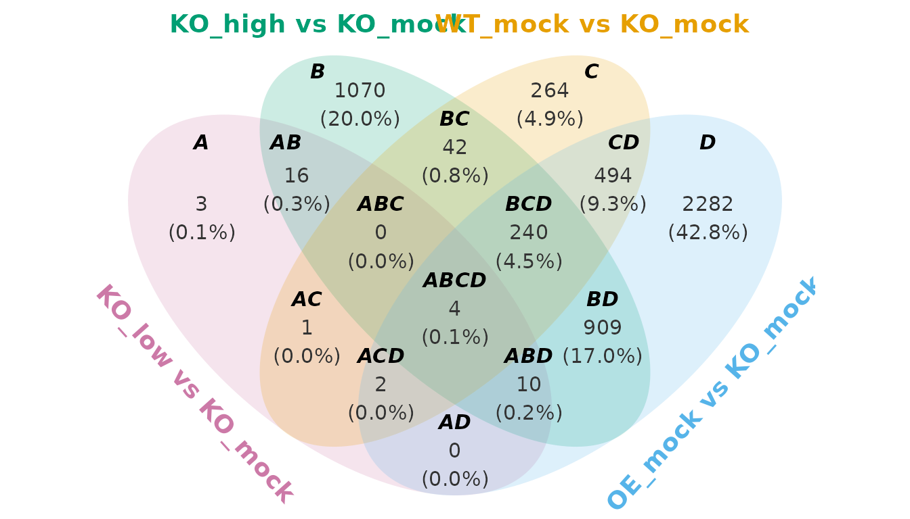
The names of the list are used as the set labels. If the input list
is unnamed, venny automatically uses labels such as
Set_A, Set_B, and Set_C.
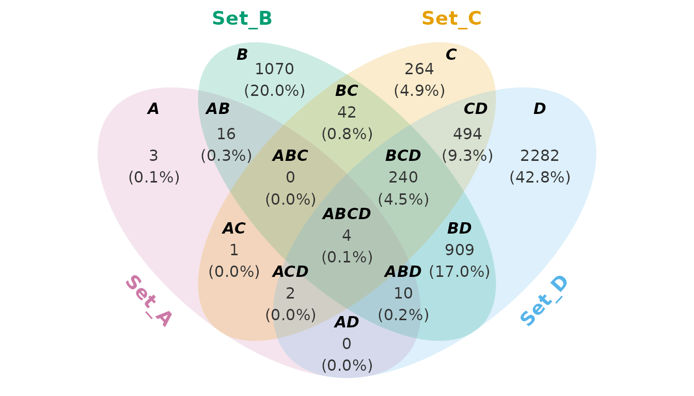
The basic plot is a ggplot object, so ordinary
ggplot2 layers can be added to it.
4. Understanding the subsets
For three sets, the possible subsets are represented by labels such
as A, AB, ABC, and so on.

For example:
-
A= elements belonging only to set A; -
AB= elements belonging to A and B but not C; -
ABC= elements shared by all three sets.
The helper how_many_subsets() can be used to determine
how many subsets are possible.
how_many_subsets(c("A", "B", "C"))
#> [1] 7
how_many_subsets(c("A", "B", "C"), detail = TRUE)
#> $N
#> [1] 7
#>
#> $combinations
#> [1] "A" "B" "C" "AB" "AC" "BC" "ABC"The corresponding binary representation can be generated with
bits_encoding():
bits_encoding(c("A", "B", "C"))
#> A B C
#> A 1 0 0
#> B 0 1 0
#> AB 1 1 0
#> C 0 0 1
#> AC 1 0 1
#> BC 0 1 1
#> ABC 1 1 1This is useful when constructing or inspecting subset definitions programmatically.
5. Summary tables
When the numerical summary is more important than the diagram, use
venn_summary().
out <- venn_summary(LGL23$DEGs)
out$table
#> A B C D subset n_elements percentage
#> A 1 0 0 0 A 3 0.1
#> B 0 1 0 0 B 1070 20.0
#> AB 1 1 0 0 AB 16 0.3
#> C 0 0 1 0 C 264 4.9
#> AC 1 0 1 0 AC 1 0.0
#> BC 0 1 1 0 BC 42 0.8
#> ABC 1 1 1 0 ABC 0 0.0
#> D 0 0 0 1 D 2282 42.8
#> AD 1 0 0 1 AD 0 0.0
#> BD 0 1 0 1 BD 909 17.0
#> ABD 1 1 0 1 ABD 10 0.2
#> CD 0 0 1 1 CD 494 9.3
#> ACD 1 0 1 1 ACD 2 0.0
#> BCD 0 1 1 1 BCD 240 4.5
#> ABCD 1 1 1 1 ABCD 4 0.1The summary contains the information needed to describe each subset.
This makes venn_summary() useful as a bridge between
visualization and downstream analysis. For example, a specific subset
can be extracted and passed to enrichment analysis, annotation, or
another statistical workflow.
6. Obtaining detailed output
By default, venny() returns a Venn diagram. Set
detail = TRUE to obtain the diagram together with the
objects needed for downstream analysis.
out <- venny(LGL23$DEGs, detail = TRUE)
names(out)
#> [1] "venn" "ellipse_path" "table" "subset_elements"The returned object contains:
-
venn— the Venn diagram as aggplotobject; -
ellipse_path— polygon coordinates for the individual ellipses; -
table— the subset summary table; -
subset_elements— the elements belonging to each subset.
For example:
out$venn
The summary table can be inspected directly:
out$table
#> A B C D subset n_elements percentage
#> A 1 0 0 0 A 3 0.1
#> B 0 1 0 0 B 1070 20.0
#> C 0 0 1 0 C 264 4.9
#> D 0 0 0 1 D 2282 42.8
#> AB 1 1 0 0 AB 16 0.3
#> BC 0 1 1 0 BC 42 0.8
#> CD 0 0 1 1 CD 494 9.3
#> AC 1 0 1 0 AC 1 0.0
#> AD 1 0 0 1 AD 0 0.0
#> BD 0 1 0 1 BD 909 17.0
#> ABC 1 1 1 0 ABC 0 0.0
#> BCD 0 1 1 1 BCD 240 4.5
#> ACD 1 0 1 1 ACD 2 0.0
#> ABD 1 1 0 1 ABD 10 0.2
#> ABCD 1 1 1 1 ABCD 4 0.1And the elements belonging to a particular subset can be retrieved from:
out$subset_elements$ABC
#> character(0)7. Customizing the Venn diagram
venny() separates plot customization into several
parameter functions. This allows the same parameter object to be reused
across multiple diagrams.
7.1 Ellipse lines and fills
Use ellipse_line() and ellipse_fill() to
control the appearance of the ellipses, i.e. set boundaries and
interiors.
venny(
LGL23$DEGs,
ellipse.line = ellipse_line(color = c("red", "transparent", "red", "navy"),
linetype = "solid",
linewidth = 2,
alpha = 0.8),
ellipse.fill = ellipse_fill(color = c("gray", "red", "navy", "orange"),
alpha = 0.25)
)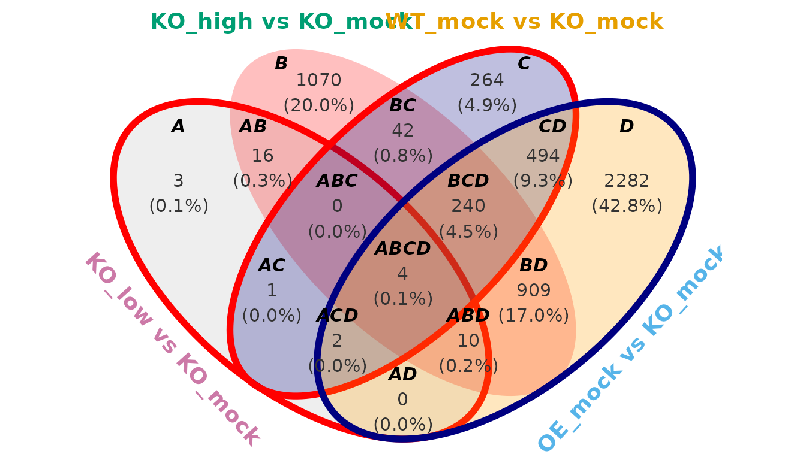
The default palette is designed to provide distinct colors for up to four sets.
7.2 Set labels
Set labels are the names for each datasets. For example, the set
labels of LGL23$DEGs are:
names(LGL23$DEGs)
#> [1] "KO_low vs KO_mock" "KO_high vs KO_mock" "WT_mock vs KO_mock"
#> [4] "OE_mock vs KO_mock"However, the set labels for internal recognition is fixed as
set_label_default(). The positioning are:
| Number of sets | Internal set labels | Positioning |
|---|---|---|
| 2 | A, B | left -> right |
| 3 | A, B, C | upper -> lower left -> lower right |
| 4 | A, B, C, D | start from lower left, clockwise |
So, when you want to assign the selected sets to the parameters-related function, do not use the user-defined set labels. For example, if you want to hide the set labels of “KO_low vs KO_mock” (lower left) and “OE_mock vs KO_mock” (upper right), you need to select “A” and “C”.
venny(
LGL23$DEGs,
set.label.position = set_label_position(hjust = c(0, -1, 0.5, 0),
hide = c("A", "C"))
)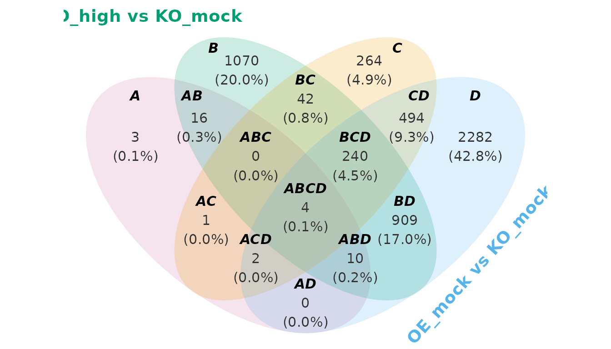
The appearance of set labels is controlled with
set_label_font():
venny(
LGL23$DEGs,
set.label.font = set_label_font(face = "italic",
size = 7)
)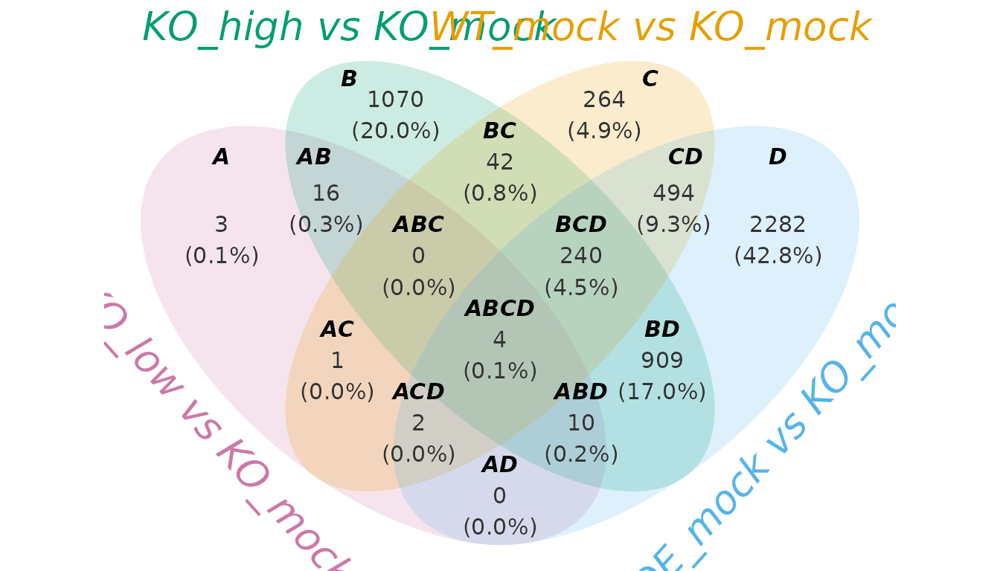
7.3 Subset labels
Subset labels can be customized via subset_*_*()
functions independently of set labels. The subset labels can be renamed
by assigning a list of (old_name = new_name) to the
subset.label argument.
subset_font_color <- vapply(subset_label_default(length(LGL23$DEGs)),
function(x)
if (x %in% c("A", "B", "C", "D")) "maroon" else "blue",
FUN.VALUE = character(1))
venny(
LGL23$DEGs,
subset.label = list(A = "Apple",
B = "Banana",
C = "Coconut",
D = "Durian"),
subset.label.font = subset_label_font(color = subset_font_color)
)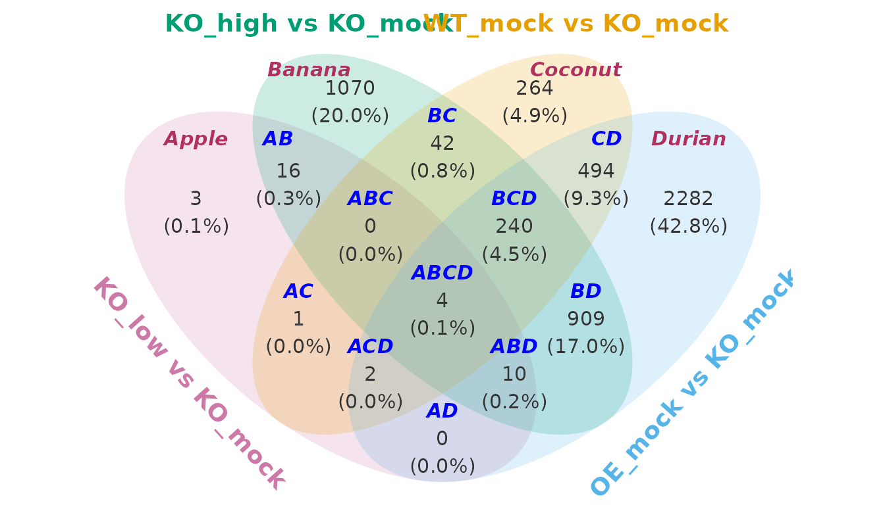
7.4 Counts and percentages
Counts and percentages are independent layers.
nm <- subset_label_default(length(LGL23$DEGs))
font_color <- fixed_length(c("red", "blue", "maroon"), length(nm))
font_angle <- fixed_length(c(30, 60, 90, 180), length(nm))
show_perc <- c("A", "B", "C", "D", "AB", "ACD", "BC", "CD", "ABCD")
venny(
LGL23$DEGs,
subset.count = TRUE,
subset.count.font = subset_count_font(family = "serif",
color = font_color,
angle = font_angle),
subset.percentage = TRUE,
subset.percentage.rounding = 4,
subset.percentage.position = subset_percentage_position(show = show_perc)
)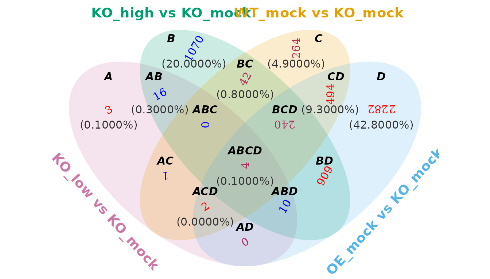
For example:
venny(
LGL23$DEGs,
subset.count.font = subset_count_font(face = "bold",
size = 4),
subset.percentage.font = subset_percentage_font(size = 3.5)
)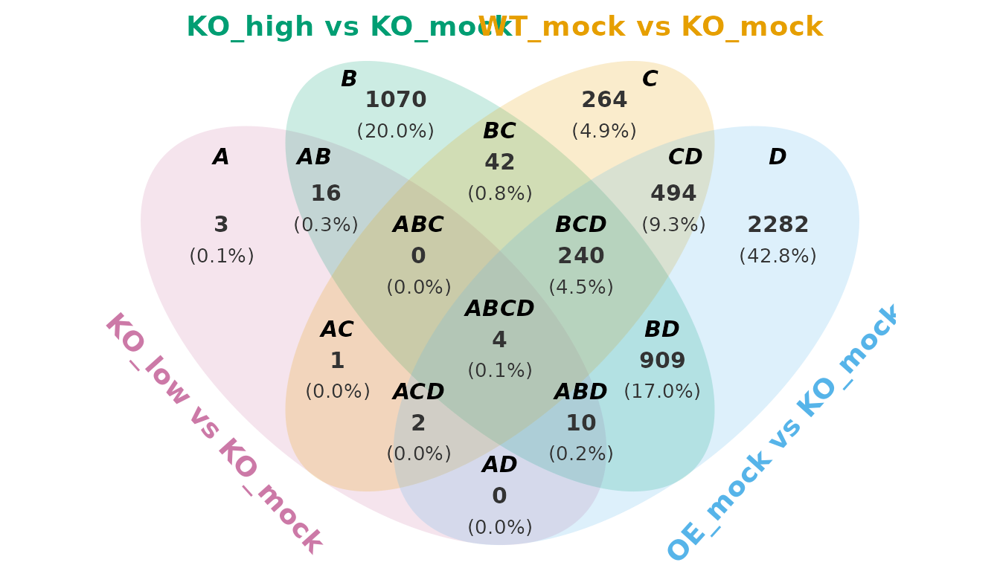
8. Working with ellipse paths
One of the distinctive features of venny is that the
Venn diagram is not treated only as a picture. The individual ellipses
are returned as polygon coordinates.
out <- venny(LGL23$DEGs, detail = TRUE)
names(out$ellipse_path)
#> [1] "KO_low vs KO_mock" "KO_high vs KO_mock" "WT_mock vs KO_mock"
#> [4] "OE_mock vs KO_mock"Each element of out$ellipse_path contains the
coordinates needed to draw the corresponding polygon. You can inspect
one ellipse directly:
head(out$ellipse_path$`KO_low vs KO_mock`)
#> x y
#> [1,] 0.6777670 -2.336767
#> [2,] 0.7070210 -2.305751
#> [3,] 0.7344838 -2.273003
#> [4,] 0.7601279 -2.238557
#> [5,] 0.7839277 -2.202447
#> [6,] 0.8058596 -2.164708The lower-level generate_ellipse_path() function can
also be used independently.
e1 <- generate_ellipse_path(x0 = 0, y0 = 0, a = 2, b = 1, angle = 45)
head(e1)
#> x y
#> [1,] 1.414214 1.414214
#> [2,] 1.391186 1.435831
#> [3,] 1.366772 1.456017
#> [4,] 1.340996 1.474752
#> [5,] 1.313883 1.492017
#> [6,] 1.285460 1.507794Because the result is a data frame of (x, y)
coordinates, it can be plotted with ggplot2:
ggplot2::ggplot(e1, ggplot2::aes(x, y)) +
ggplot2::geom_polygon() +
ggplot2::coord_fixed() +
ggplot2::theme_void()9. Set operations on Venn regions
The ellipse paths returned by venny() can be combined
with set operations.
The package provides methods for:
-
intersect(): {A} ∩ {B} ∩ … – the common elements shared by the sets; -
union(): {A} ∪ {B} ∪ … – all elements in the sets; -
setdiff(): {A} − {B} − … – subtraction from the previous sets.
Note: To prevent function masking from other packages, explicitly
namespace set operations using venny:: or reassign them
locally:
# Option A: Explicit namespacing
venny::intersect()
venny::union()
venny::setdiff()
# Option B: Local reassignment
intersect <- venny::intersect
union <- venny::union
setdiff <- venny::setdiffThese operations can subsequently be displayed with
highlight() or ggplot2::geom_polygon. The
highlight() is a convenient wrapper around
ggplot2::geom_polygon() for displaying the result of a
polygon operation.
9.1 Intersection
out <- venny(unname(LGL23$DEGs), detail = TRUE)
ep <- out$ellipse_path
setops <- venny::intersect(ep$Set_A, ep$Set_B, ep$Set_D)
highlight(out$venn, setops)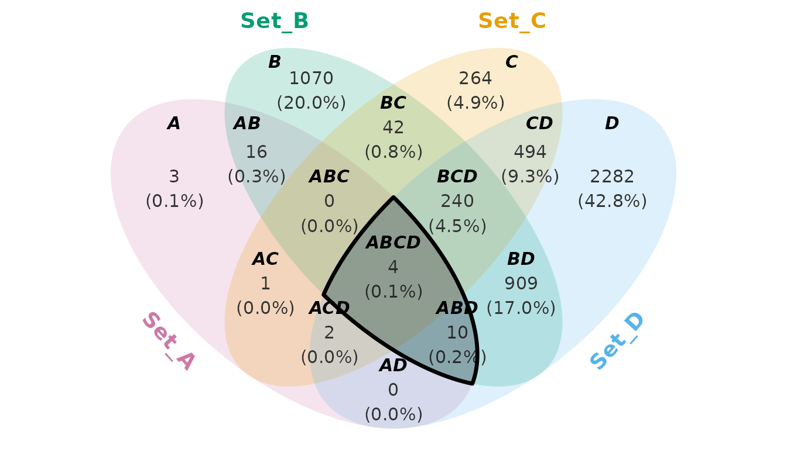
This highlights the region shared by A, B, and D. Because
highlight() returns a ggplot object,
additional layers can be added. For example
highlight(out$venn, setops, color = "red", fill = "red", alpha = 0.25) +
ggplot2::annotate("text", x = 0, y = 2.5, label = "A ∩ B ∩ D", fontface = "bold")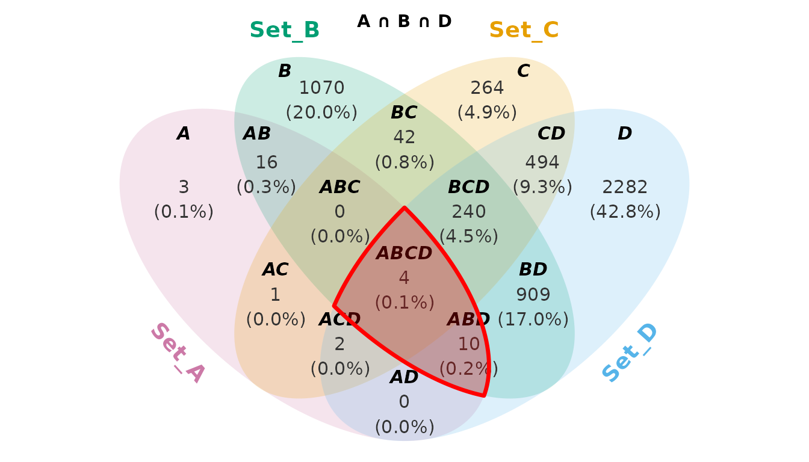
9.4 Chaining operations
Set operations can be chained to describe more complex regions.
setops <- venny::union(ep$Set_A, ep$Set_B, ep$Set_C) |>
venny::intersect(ep$Set_D) |>
venny::setdiff(ep$Set_B)
highlight(out$venn, setops)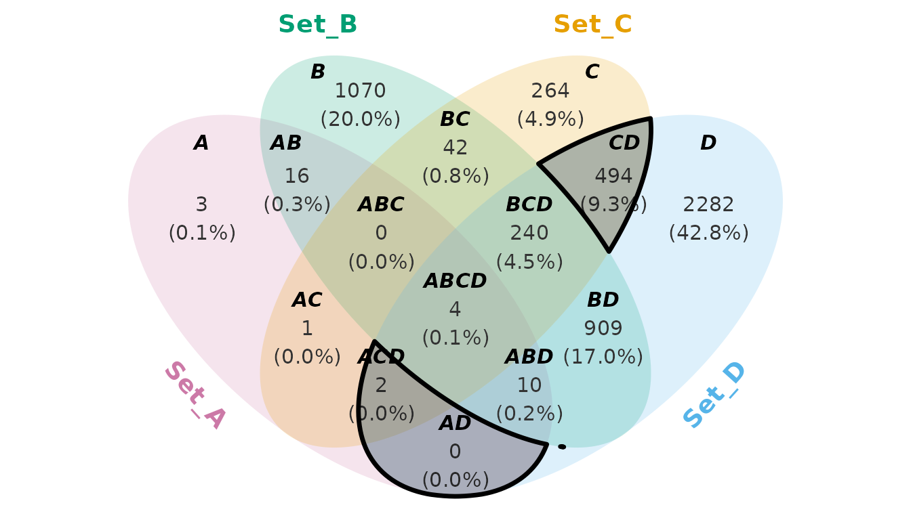
This approach is useful when the region of interest cannot be described simply by selecting a single named Venn subset.
10. Case study: RNA-seq analysis
This is not a fully realistic case study. The purpose is to demonstrate how to use this package, rather than to present a rigorous academic analysis.
10.1 Prerequisites
if (!require(venny)) install.packages("venny")
if (!require(dplyr)) install.packages("dplyr")
if (!require(forcats)) install.packages("forcats")
if (!require(ggplot2)) install.packages("ggplot2")
if (!require(ggtext)) install.packages("ggtext")
if (!require(BiocManager)) install.packages("BiocManager")
if (!require(clusterProfiler)) BiocManager::install("clusterProfiler")
if (!require(org.At.tair.db)) BiocManager::install("org.At.tair.db")
library(venny)
library(dplyr)
library(forcats)
library(ggplot2)
library(ggtext)
library(clusterProfiler)
library(org.At.tair.db)
intersect <- venny::intersect
setdiff <- venny::setdiff
union <- venny::union10.2 Background information
lst <- LGL23$DEGs
print(names(lst))
#> [1] "KO_low vs KO_mock" "KO_high vs KO_mock" "WT_mock vs KO_mock"
#> [4] "OE_mock vs KO_mock"The LGL23 object is an RNA-seq dataset stored as a list
containing the following components:
- sample_info: A data frame containing the genotype and treatment information for each sample ID.
- GFD: A data frame containing gene functional descriptions and annotations.
- count_matrix: A matrix of read counts (gene expression) across all sample IDs.
- DEGs: A list of differentially expressed genes (DEGs). This is an
example for illustration.
- KO_low vs KO_mock: Genes that are differentially expressed in the knockout (KO) plant after low-dose chemical treatment compared with the untreated KO control. The KO plant is a genetically modified line in which a specific gene (e.g., gene_X) has been disrupted or deleted.
- KO_high vs KO_mock: Similar to KO_low vs KO_mock, but the KO plant is treated with a high dose of the chemical.
- WT_mock vs KO_mock: Genes that are differentially expressed between the wild-type (WT) plant and the untreated KO plant under mock-treatment conditions.
- OE_mock vs KO_mock: Genes that are differentially expressed between the overexpression (OE) plant and the untreated KO plant under mock-treatment conditions. The OE plant is a genetically modified line in which gene_X is highly expressed or constitutively activated. Ideally, the transcriptional profile of OE_mock should resemble that of KO_high.
10.3 Loss-of-function (Set C)
To investigate the function of the target gene, we compared gene expression profiles between the WT and KO plants under untreated conditions. Differentially expressed genes (DEGs) identified from this comparison may provide insights into the biological roles and regulatory functions of the target gene.
subset_names <- names(subset_label_default(length(lst)))
select_subsets <- c("C", "BC", "CD", "ABC", "BCD", "AC", "ABCD", "ACD")
font_color <- sapply(subset_names, \(x) if (x %in% select_subsets) "red" else "navy")
out <- venny(
data = lst,
detail = TRUE,
set.label.position = set_label_position(hjust = c(0.2, -0.5, 0.5, -0.2)),
subset.label.font = subset_label_font(color = font_color),
subset.count.font = subset_count_font(color = font_color),
subset.percentage.font = subset_percentage_font(color = font_color)
)
venn <- out$venn
setops <- out$ellipse_path$`WT_mock vs KO_mock`
highlight(venn, setops, linetype = "solid", color = "red") +
coord_cartesian(xlim = c(-3, 5)) +
annotate("richtext",
x = 3.2,
y = -1.9,
hjust = 0,
size = 4,
label = paste(
"<b>KO:</b> Knock-out",
"<b>WT:</b> Wild-type",
"<b>OE:</b> Overexpression",
"<b>mock:</b> 0 nM treatment",
"<b>low:</b> 1 nM treatment",
"<b>high:</b> 5 nM treatment",
sep = "<br>")) +
labs(title = "Awesome title") +
theme(plot.title = element_text(size = 20, face = "bold"))
#> Coordinate system already present.
#> ℹ Adding new coordinate system, which will replace the existing one.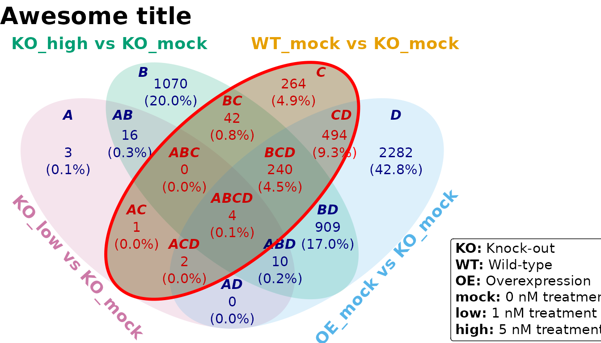
Target genes can be extracted from the DEGs and further analyzed using Gene Ontology (GO) analysis. The results suggest that the gene is involved in regulating nitrogen metabolism. Consistent with the finding, we observed clear phenotypic differences between WT and KO plants under nitrogen-deficient conditions. Additionally, responses under sulfate starvation and drought recovery reveal potential new functional roles of the gene, providing directions for future investigation.
GO <- clusterProfiler::enrichGO(
gene = LGL23$DEGs$`WT_mock vs KO_mock`,
OrgDb = org.At.tair.db,
keyType = "TAIR",
ont = "BP"
)
#> Warning in bitr(gene, fromType = fromType, toType = "ENTREZID", OrgDb = OrgDb):
#> 4.58% of input gene IDs are fail to map...
GO@result |>
dplyr::slice_max(RichFactor, n = 20) |>
ggplot(aes(RichFactor, forcats::fct_reorder(Description, RichFactor))) +
theme_bw() +
geom_point(aes(size = Count, color = FoldEnrichment)) +
theme(axis.title.y = element_blank())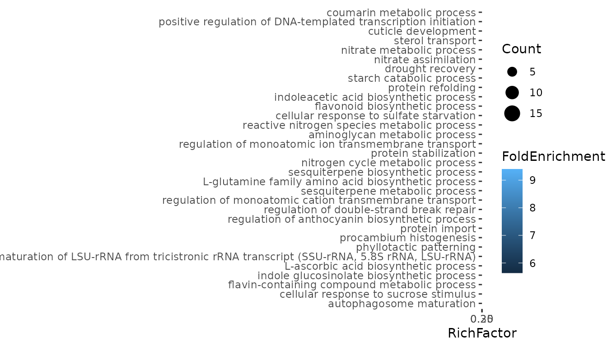
10.4 High-dosage recovery (Subset BCD)
We compared transcriptomic responses induced by high-dose exogenous chemical treatment in the knockout line (KO_high), endogenous overexpression of the target gene in the OE line (OE_mock), and the wild-type control (WT_mock), each relative to the untreated knockout condition (KO_mock). This integrative comparison was used to evaluate whether the exogenous chemical can phenocopy endogenous activation of the pathway and whether its transcriptional effects converge toward a wild-type-like state.
select_subsets <- "BCD"
font_color <- sapply(subset_names, \(x) if (x %in% select_subsets) "red" else "navy")
BCD <- venny(
data = lst,
detail = TRUE,
set.label.position = set_label_position(hjust = c(0.2, -0.5, 0.5, -0.2)),
subset.label.font = subset_label_font(color = font_color),
subset.count.font = subset_count_font(color = font_color),
subset.percentage.font = subset_percentage_font(color = font_color)
)
venn <- BCD$venn
ep <- BCD$ellipse_path
setops <- ep$`KO_high vs KO_mock` |>
intersect(ep$`WT_mock vs KO_mock`, ep$`OE_mock vs KO_mock`) |>
setdiff(ep$`KO_low vs KO_mock`)
highlight(venn, setops, linetype = "solid", color = "red")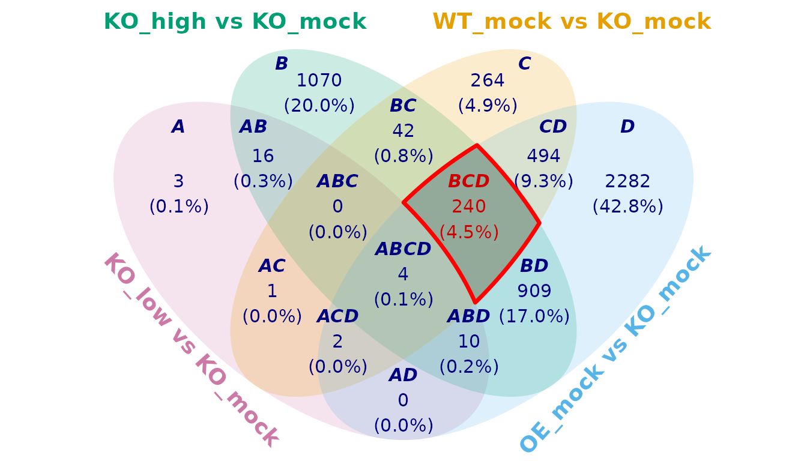
GO <- clusterProfiler::enrichGO(
gene = BCD$subset_elements$BCD,
OrgDb = org.At.tair.db,
keyType = "TAIR",
ont = "BP"
)
#> Warning in bitr(gene, fromType = fromType, toType = "ENTREZID", OrgDb = OrgDb):
#> 2.08% of input gene IDs are fail to map...
GO@result |>
dplyr::slice_max(RichFactor, n = 20) |>
ggplot(aes(RichFactor, forcats::fct_reorder(Description, RichFactor))) +
theme_bw() +
geom_point(aes(size = Count, color = FoldEnrichment)) +
theme(axis.title.y = element_blank())
Across all three contrasts, we observed a consistent enrichment of genes involved in nitrogen metabolism, suggesting that KO_high, OE_mock, and WT_mock share a common regulatory signature in this pathway. This result supports the hypothesis that the synthesized chemical functionally mimics the endogenous gene activity and partially restores wild-type-like nitrogen metabolic regulation in the KO background.
11. Practical recommendations
Choose venny() when:
- you need a publication-oriented Venn diagram;
- you want control over labels, counts, percentages, fills, and lines;
- you need direct access to the underlying subset elements;
- you want to perform additional set operations on diagram regions.
Summary
The venny package provides three closely connected
levels of analysis:
Visualization –
venny()creates customizable Venn diagrams.Tabulation –
venn_summary()describes the composition of every subset and can expose the corresponding elements.Geometry and set operations – ellipse paths can be manipulated with
intersect(),union(), andsetdiff(), and the resulting regions can be visualized withhighlight().
This makes venny useful not only for displaying
overlaps, but also for constructing reproducible workflows in which Venn
regions become explicit objects for downstream analysis.